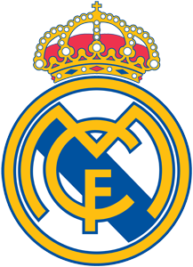

SEJARAH
Didirikan pada tahun 1902 sebagai Madrid Football Club, secara tradisional mengenakan kostum kandang putih. Kata Real ("dari kerajaan") Spanyol dan dianugerahkan ke klub oleh Raja Alfonso XIII pada tahun 1920 bersama-sama dengan mahkota kerajaan di lambang klub. Klub ini telah memainkan pertandingan kandang di Stadion Santiago Bernabéu dengan kapasitas 85.454 di pusat kota Madrid sejak tahun 1947. Klub ini merupakan salah satu klub sepak bola terkaya di dunia dalam hal pendapatan, senilai €968,3 juta dan total aset yang senilai €7,2miliar (atau $7,2 miliar) di 2019.[4][5] Ini adalah salah satu dari tiga klub untuk tidak pernah terdegradasi dari papan atas sepak bola Spanyol, bersama dengan Athletic Bilbao dan Barcelona club ini juga merupakan club dengan torehan piala UCL terbanyak. Real Madrid memiliki banyak persaingan lama, terutama El Clásico dengan Barcelona dan El Derbi madrileño dengan Atlético Madrid.